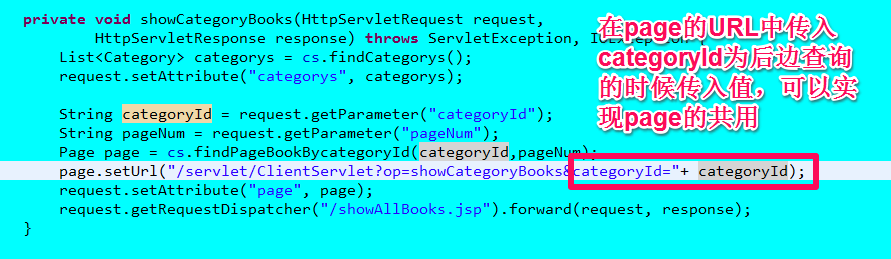
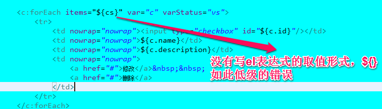

七月 24, 2014 1:03:28 下午 org.apache.catalina.core.StandardWrapperValve invoke
SEVERE: Servlet.service() for servlet [jsp] in context with path [/netbook] threw exception [java.lang.RuntimeException : java.sql.SQLException: Cannot create java.util.Locale$Category: java.util.Locale$Category Query: select * from category Parameters: []] with root cause
java.sql.SQLException: Cannot create java.util.Locale$Category: java.util.Locale$Category Query: select * from category Parameters: []
at org.apache.commons.dbutils.AbstractQueryRunner.rethrow(AbstractQueryRunner.java:320)
at org.apache.commons.dbutils.QueryRunner.query(QueryRunner.java:349 )
at org.apache.commons.dbutils.QueryRunner.query(QueryRunner.java:305 )
at com.itheima.dao.impl.CategoryDaoImpl.findCategorys(CategoryDaoImpl.java:20)
at com.itheima.servlet.impl.ClientServiceImpl.findCategorys(ClientServiceImpl.java:20)
at com.itheima.servlet.ClientServlet.showBooks(ClientServlet.java:30 )
at com.itheima.servlet.ClientServlet.doGet(ClientServlet.java:22 )
at javax.servlet.http.HttpServlet.service(HttpServlet.java:620 )
at javax.servlet.http.HttpServlet.service(HttpServlet.java:727 )
三、
四、
